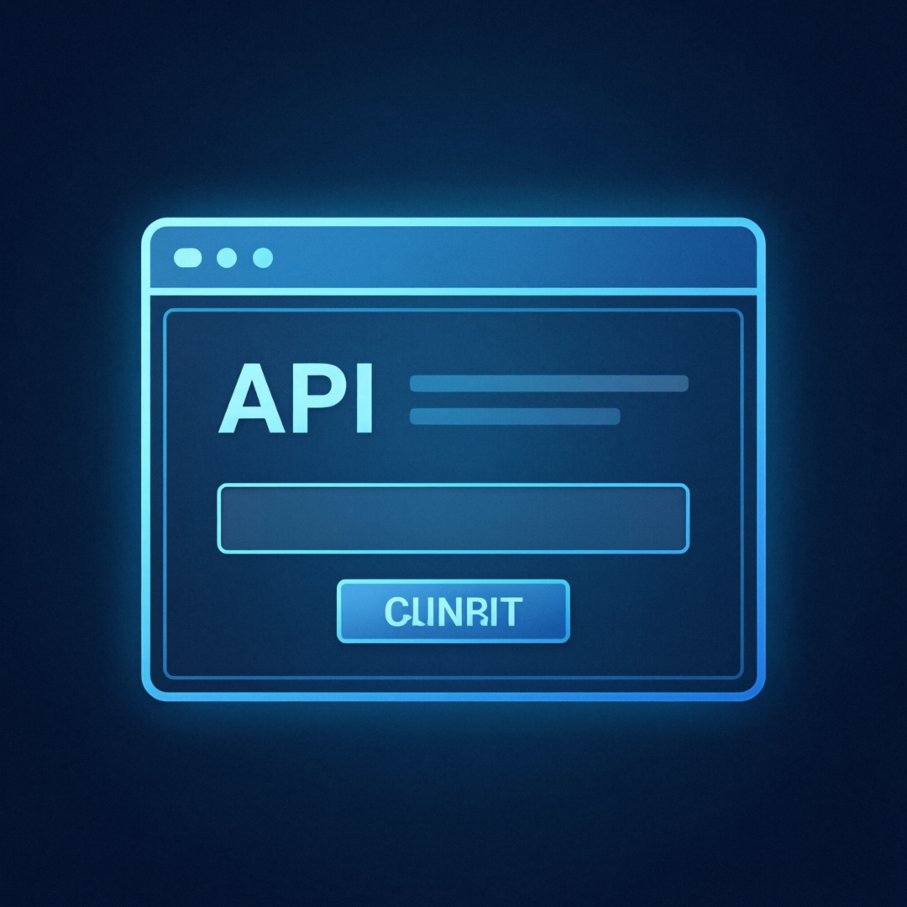
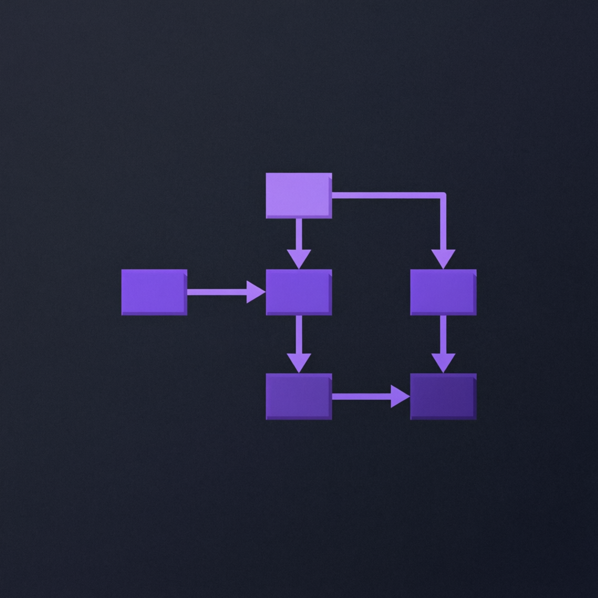
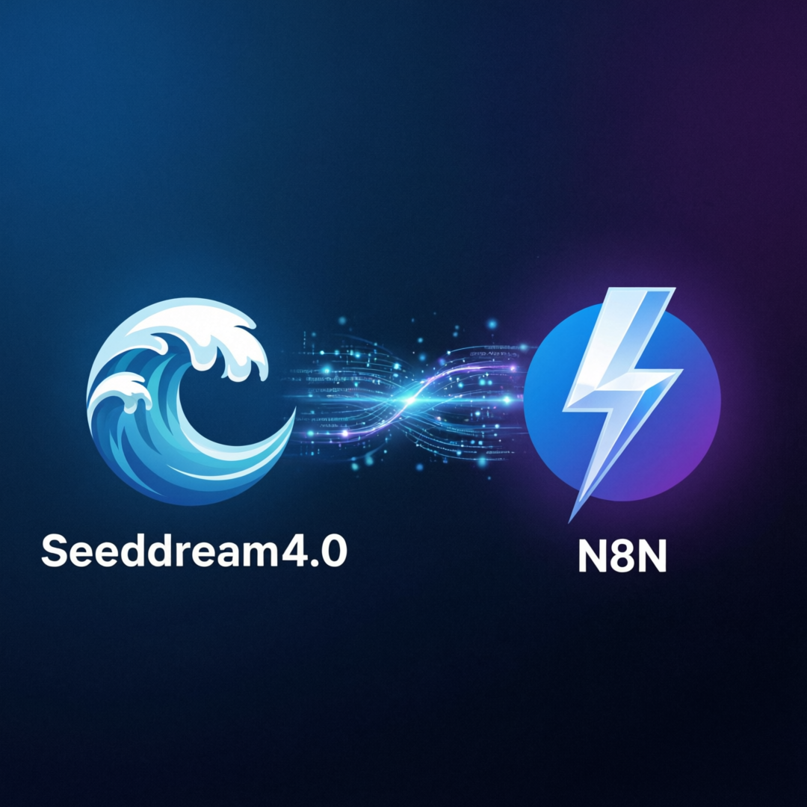

AI 工具层出不穷，如何打通自动化工作流？最佳组合方案
当前最火的 AI 图像生成工具之一
强大的开源工作流自动化平台
强大的功能组合，让工作流自动化变得简单高效
只需 2 步即可完成配置
告别手动操作繁琐流程
实时查看工作流执行状态
满足各种复杂业务场景
简单两步，快速搭建 AI 图像生成自动化工作流
第一步：准备工作
在 Seedream 平台注册并获取 API 凭证
配置 N8N 的 Webhook 作为回调端点
验证 API 连接确保正常工作

第二步：搭建自动化
在 N8N 中创建新的自动化工作流
配置与 Seedream API 的连接节点
设置请求参数、认证信息和回调
运行测试确保工作流正常

自动化执行，大幅减少人工操作时间
告别繁琐的手动流程，一键触发执行
实时监控工作流状态，清晰直观

Webhook、定时器或手动触发
N8N 自动调用 Seedream API
自动保存生成的图像到目标位置
无论你是新手还是专家，都能从中受益
刚接触 AI 工具，想快速上手自动化
需要集成 AI 能力的应用开发者
追求工作效率最大化的用户
需要规模化 AI 图像生产能力